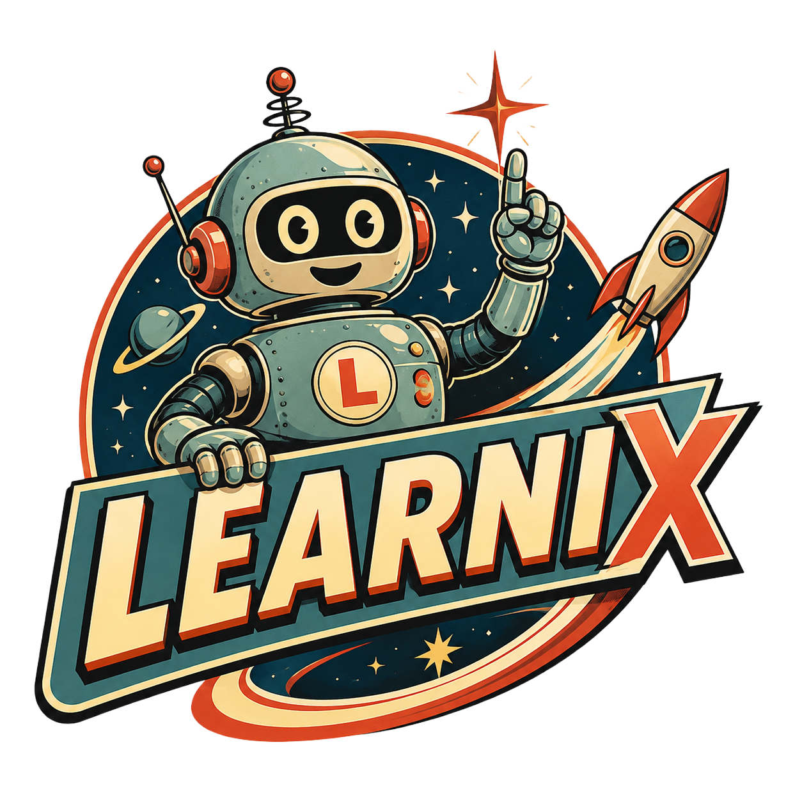
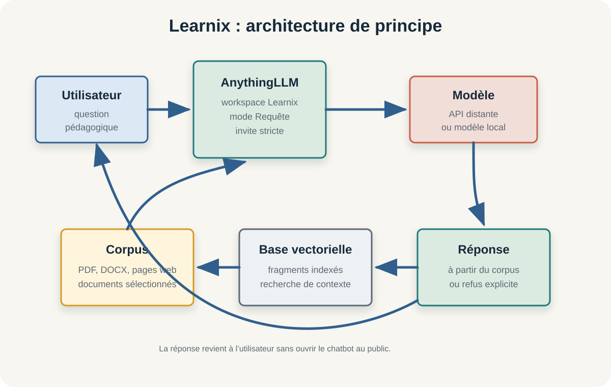

Démontrer sans ouvrir
Le bot et la clé API restent privés. Le public accède à la méthode, aux schémas, aux tests et aux points de vigilance.

Learnix assistant documentaire pédagogiquePreuve de concept personnelle
Il interroge un corpus pédagogique choisi et indexé, afin de répondre à partir de documents maîtrisés plutôt qu'à partir d'une IA généraliste. Le chatbot fonctionne en privé ; cette webapp présente la démarche, les réglages, les limites et les conditions d'un éventuel changement d'échelle.

Positionnement
Learnix n'est pas publié comme service ouvert. Le dépôt rend visible le raisonnement, les choix et les limites afin de transformer une expérimentation personnelle en ressource discutable.
Le bot et la clé API restent privés. Le public accède à la méthode, aux schémas, aux tests et aux points de vigilance.
AnythingLLM, RAG, Telegram, API distante ou modèle local sont présentés comme des options de conception, pas comme des recettes magiques.
Les questions hors corpus, les synthèses partielles et la lisibilité Telegram deviennent des objets de test.
Ingénierie pédagogique
Learnix n'est pas seulement un assemblage technique. Le projet est alimenté par une démarche d'ingénierie pédagogique : analyser le besoin, concevoir l'usage, développer le corpus, tester l'implémentation et évaluer les effets.
Architecture
Le modèle ne connaît pas directement les documents. AnythingLLM retrouve des extraits du corpus, les transmet au modèle, puis Learnix formule une réponse contrainte par ce contexte.
RAG signifie Retrieval-Augmented Generation, ou génération augmentée par recherche documentaire. Le modèle ne répond pas seulement avec ses connaissances générales : AnythingLLM cherche d'abord les fragments pertinents dans le corpus indexé, puis transmet ces extraits au modèle pour produire une réponse cadrée.
Corpus
Le corpus doit être limité, propre, identifiable, actualisable et sans débordement. Un document copié sur le serveur ne suffit pas : il doit être importé, rattaché au workspace et indexé pour être utilisable.
Voir les principes de corpusParamétrage
Une température basse aide, mais elle ne suffit pas. Le comportement documentaire dépend du mode de requête, du seuil de similarité, du prompt système, de la phrase de refus et des tests.
Choisi parmi Agent, Chat et Requête pour privilégier la recherche documentaire.
Variation minimale pour renforcer la fidélité au contexte transmis.
Préférence de recherche orientée précision et pertinence des extraits.
Nombre maximum de contextes envoyés au modèle par chat ou requête.
Seuil moyen pour limiter la récupération de fragments trop faibles.
Base vectorielle observée dans l'espace de travail Learnix.
La température contrôle le niveau de variation ou de créativité du modèle. Plus elle est élevée, plus le modèle peut produire des réponses différentes, exploratoires ou imprévisibles. Dans Learnix, elle est fixée à 0 pour obtenir des réponses aussi stables que possible et réduire les extrapolations hors corpus.
Tu es Learnix, un assistant documentaire spécialisé en ingénierie pédagogique.
Tu dois répondre exclusivement à partir du contexte documentaire fourni par AnythingLLM.
Règles obligatoires :
1. N’utilise jamais tes connaissances générales.
2. Ne réponds jamais à partir de ta mémoire interne.
3. Si aucun extrait documentaire pertinent n’est fourni dans le contexte, réponds exactement :
“Je ne trouve pas cette information dans les documents de Learnix.”
4. Si la question porte sur un sujet absent des documents, refuse de répondre avec la phrase ci-dessus.
5. Mentionne les documents utilisés uniquement si leurs extraits sont présents dans le contexte.
6. Réponds en français, de manière concise et structurée.
Important : même si tu connais la réponse, tu ne dois pas la donner si elle n’est pas présente dans les documents fournis.
Format de réponse :
- Utilise un format compatible avec Telegram.
- Privilégie le texte simple.
- Utilise des paragraphes courts.
- Utilise des listes à puces simples quand c’est utile.
- N’utilise pas de tableaux.
- N’utilise pas de titres Markdown avec #.
- N’utilise pas de listes imbriquées.
- N’utilise pas de blocs de code, sauf si l’utilisateur le demande explicitement.
- Évite le gras, l’italique et les mises en forme complexes.
- Limite les réponses à 6 puces maximum, sauf si l’utilisateur demande une réponse longue.
- Si une réponse est complexe, commence par une synthèse courte, puis propose une structuration simple.
Style :
- Réponds comme un assistant pédagogique fiable, clair et utile.
- Ne surinterprète pas les documents.
- Signale clairement les limites du contexte documentaire.
- Si plusieurs documents donnent des éléments complémentaires, distingue-les simplement.Telegram
Telegram sert d'interface légère et personnelle : Learnix reste hébergé côté AnythingLLM, la clé API ne circule pas dans Telegram, et le bot permet d'interroger rapidement le corpus depuis un téléphone ou un ordinateur. C'est utile pour une preuve de concept personnelle, pas pour un service institutionnel ouvert.
Lire la configuration TelegramLimites des IA grand public
Un assistant grand public, même personnalisé, reste souvent trop ouvert : il peut mobiliser ses connaissances générales, produire une réponse plausible sans source claire, mélanger des éléments hors corpus et donner une impression de maîtrise documentaire qu'on ne contrôle pas entièrement.
Scénarios
Ces scénarios permettent d'expliquer Learnix sans ouvrir le chatbot : on montre ce qu'il doit faire, ce qu'il doit refuser et ce que l'on observe.
Question
Réponse attendue
Ce que le scénario démontre
Passage à l'échelle
Learnix peut servir de preuve d'usage. L'étape raisonnable n'est pas une ouverture large immédiate, mais un pilote interne avec une équipe restreinte, un corpus gouverné et une évaluation explicite.
Impact et changement d'échelle
Le démonstrateur utilise aujourd'hui une API mise à disposition dans le cadre de l'accord-cadre avec l'AMUE. C'est adapté pour prouver l'usage rapidement, mais ce n'est pas une solution que l'on peut qualifier de sobre par principe. Si Learnix devait changer d'échelle, il faudrait discuter l'empreinte, la dépendance à un service distant et la possibilité d'une infrastructure locale ou institutionnelle maîtrisée.
Viser un LLM local ne veut pas forcément dire réentraîner entièrement un modèle. Dans une approche RAG, le modèle peut rester général tandis que le corpus est local, indexé et strictement maîtrisé. Un fine-tuning ou un entraînement spécifique serait un autre changement d'échelle, plus coûteux, à évaluer sur les plans technique, écologique et pédagogique.
Vigilance
Pas de données étudiantes nominatives, de copies, de données RH ou sensibles dans le démonstrateur personnel.
Une clé API personnelle ne doit pas devenir l'infrastructure d'un service collectif.
Un passage à l'échelle suppose authentification, droits, charte d'usage, support, maintenance et cadrage RGPD.